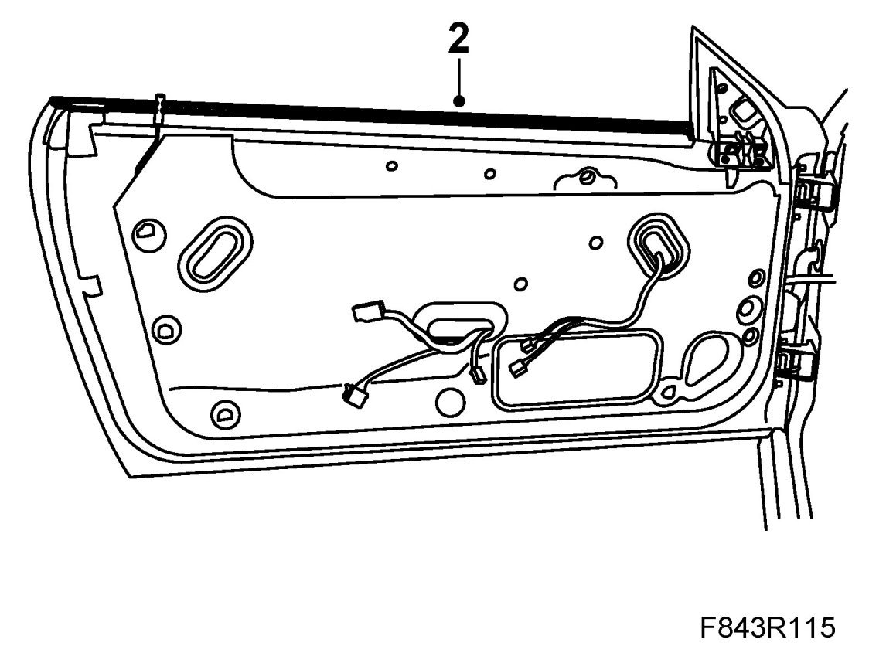
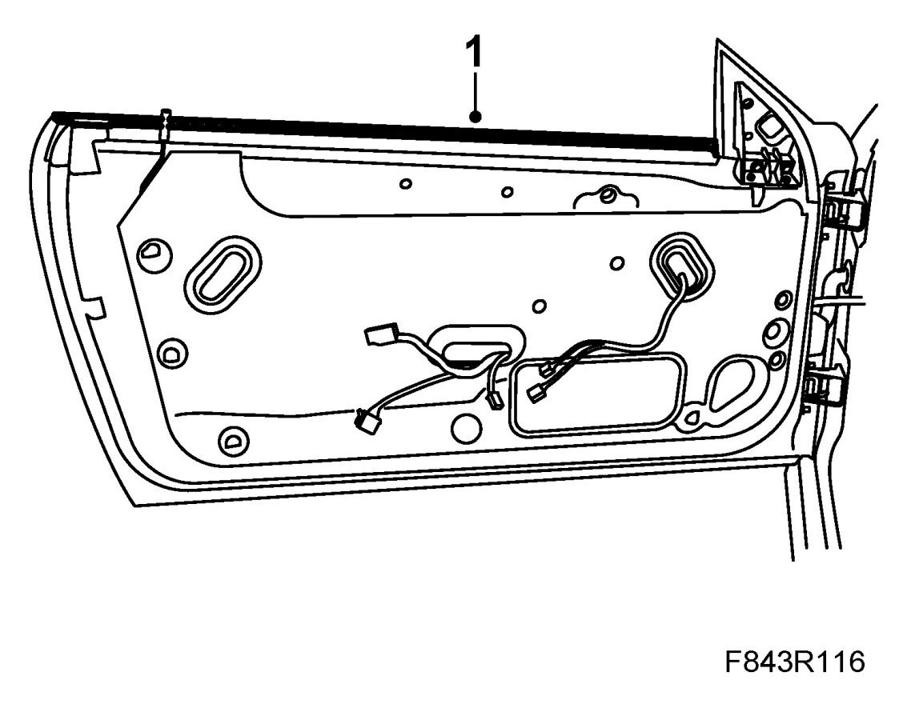

Inner Weatherstrip, Door Window, CV
Inner Weatherstrip, Door Window, CV
To remove
1. Remove Door trim, CV.
2. Lift up and remove the inner weatherstrip.

To fit
1. Fit the inner weatherstrip. Check that it is correctly located against the outer weatherstrip.

2. Fit Door trim, CV.
Cars with pinch protection: Carry out Programming the pinch protection.